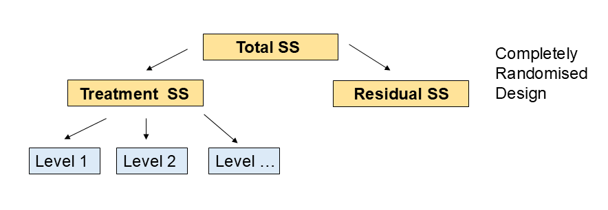
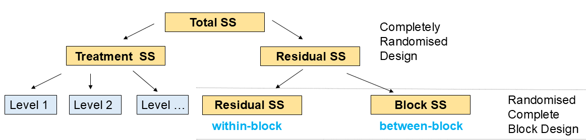

total_nonrandom <- 60 # total students in non-random sample/class size
count_yes_nonrandom <- 38 # yes I know the person next to me
count_no_nonrandom <- 22 # no I don't know the person next to meIn this week’s lectures we covered complete randomised designs (CRD) and randomized block designs (RBD) for experiments with one factor or treatment. We also covered analysis of variance (ANOVA) as a method to analyse data from these experimental designs.
TipKey learning outcomes
- Assess the validity of an experiment in terms of the appropriateness of replication:
- Randomisation
- Experimental unit vs sampling unit
- Replication
- Control of variation
- Completely randomised design (CRD)
- Explain the concept of blocking
- Randomised complete block design (RCBD)
- Know how to calculate the % variation explained by treatments and blocking terms
1 Randomisation
Randomisation is a key principle of experimental design. It helps to ensure that the treatment groups are comparable and that the results of the experiment are not biased by confounding factors.
ImportantWhy randomise?
- It helps to eliminate bias in the allocation of treatments to experimental units.
- It helps to ensure that the treatment groups are comparable.
- It helps to ensure that the results of the experiment are not confounded by other factors.
- It is a key assumption of all statistical models.
1.1 Exercise 1: Testing randomisation
Let’s work together as a class to test the effect of randomisation on an experiment. We will simulate an experiment with and without randomisation and compare the results.
Assign each student a number from 1 to the total number of students in the class. Each student will be asked to answer the question:
“Do you know the student next to you? Yes or No”
1.1) Non-random sample
“Do you know the student sitting next to you? Yes or No”
Put your hand up if you answer “Yes”, and keep it down if you answer “No”. The students with their hands up are counted as “Yes” and the students with their hands down are counted as “No”. This is our non-random sample.
Class answers — Replace these with your class numbers:
Class size (number of students present):
class_size <- total_nonrandom1.2) Percentages from the non-random sample
prop_yes_nonrandom <- (count_yes_nonrandom / total_nonrandom) * 100
prop_no_nonrandom <- (count_no_nonrandom / total_nonrandom) * 100cat("Non-random sample % Yes:", round(prop_yes_nonrandom, 1), "%\n")Non-random sample % Yes: 63.3 %cat("Non-random sample % No :", round(prop_no_nonrandom, 1), "%\n\n")Non-random sample % No : 36.7 %1.3) Random sample
We simulate student IDs and assign a random number to each ID.
set.seed(123) # For reproducibility
student_ids <- seq_len(class_size)
rand_num <- runif(class_size)
class_df <- data.frame(id = student_ids, rand_num = rand_num)Random sample size (how many students you will sample at random):
random_sample_size <- 30 # choose a sample size for the random sampleRandomly select students:
set.seed(202)
sampled_ids <- sample(class_df$id, size = random_sample_size, replace = FALSE)
sampled_ids # students with these numbers were randomly selected to be asked the question again. [1] 16 46 40 8 6 60 22 36 45 57 33 51 55 11 27 43 41 25 49 54 47 24 29 39 59
[26] 17 13 1 50 4“Do you know the student next to you? Yes or No”
Enter counts for the random sample:
After you randomly select those students and ask the question, enter the counts here.
count_yes_random <- 14
count_no_random <- 16Percentages for the random sample:
prop_yes_random <- (count_yes_random / random_sample_size) * 100
prop_no_random <- (count_no_random / random_sample_size) * 100cat("Random sample % Yes:", round(prop_yes_random, 1), "%\n")Random sample % Yes: 46.7 %cat("Random sample % No :", round(prop_no_random, 1), "%\n\n")Random sample % No : 53.3 %Estimate the bias:
Bias here is the difference between the non-random sample proportion and the random sample proportion.
bias_yes <- prop_yes_nonrandom - prop_yes_random
bias_no <- prop_no_nonrandom - prop_no_randomcat("Estimated bias in % Yes (non-random - random):", round(bias_yes, 1), "%\n")Estimated bias in % Yes (non-random - random): 16.7 %cat("Estimated bias in % No (non-random - random):", round(bias_no, 1), "%\n\n")Estimated bias in % No (non-random - random): -16.7 %Visualisation:
Bar plot of % Yes/No for non-random vs random samples using ggplot2.
percent_df <- data.frame(
sample_type = rep(c("Non-random sample", "Random sample"), each = 2),
response = rep(c("Yes", "No"), times = 2),
percent = c(prop_yes_nonrandom, prop_no_nonrandom, prop_yes_random, prop_no_random)
)
library(ggplot2)
p <- ggplot(percent_df, aes(x = response, y = percent, fill = sample_type)) +
geom_col(position = position_dodge(width = 1)) +
labs(title = "Non-random vs Random Sample: % Knowing the Neighbour",
x = "Response", y = "Percent", fill = "Sample type") +
scale_fill_manual(values = c("Non-random sample" = "#4C78A8", "Random sample" = "#F58518")) +
theme_minimal(base_size = 12)
print(p)
Non-random sampling (asking about the person next to you) is typically biased because seating patterns cluster friends or cohorts.
- Random sampling gives each student an equal chance, reducing systematic bias.
- Comparing the two percentages provides a simple measure of bias in this context.
2 Experimental Unit vs Sampling Unit
In an experiment, it is important to distinguish between the experimental unit and the sampling unit.
ImportantExperimental unit vs Sampling unit
- The experimental unit is the smallest unit to which a treatment is applied.
- The sampling unit is the smallest unit from which measurements are taken.
2.1 Exercise 2: Identifying units
Consider an experiment to test the effect of different fertilizers on plant growth. The experiment uses 12 pots, with 4 pots assigned to each of 3 fertilizer treatments (A, B, and C). Each pot contains 5 plants, and the height of each plant is measured after 4 weeks.
What is the experimental unit and what is the sampling unit in this experiment?
# Experimental unit: pot
# Sampling unit: individual plant- The experimental unit is the pot, as the fertilizer treatment is applied to the entire pot.
- The sampling unit is the individual plant, as the height of each plant is measured.
Working in pairs, identify other examples of experimental units vs sampling units and check answers with staff.
# Examples here3 Replication
Replication is the repetition of an experimental condition to estimate the variability of the data and increase the precision of the results.
ImportantWhy replicate?
- To estimate the variability of the data.
- To increase the precision of the results.
- To increase the power of statistical tests.
Consider the plant growth experiment above. If each fertilizer treatment is applied to only one pot, there is no replication, and it is impossible to estimate the variability of plant growth within each treatment. However, if each fertilizer treatment is applied to 4 pots, there is replication, allowing for estimation of variability and more reliable statistical analysis.
TipUnderstanding variation is our job as scientists!
- Variation is inherent in all biological systems.
- Our job is to understand and account for this variation in our experimental designs and analyses.
4 Control of Variation: Completely Randomised Design (CRD)
In a Completely Randomised Design (CRD), experimental units are randomly assigned to treatments. This design is appropriate when the experimental units are homogeneous and there are no known sources of variation that need to be controlled.

TipKey features of CRD
- Random assignment of treatments to experimental units.
- Appropriate for homogeneous experimental units.
- Simple to implement and analyse.
Simple experiments can be easier to interpret, but may not control for variation as well as more complex designs.
4.1 Exercise 3: Completely Randomised Design (CRD)
Consider an experiment to test the effect of different fertilizers on plant growth using a CRD. The experiment uses 12 pots, with 4 pots assigned to each of 3 fertilizer treatments (A, B, and C). Each pot contains 5 plants, and the height of each plant is measured after 4 weeks.
# Randomly assign treatments to pots
set.seed(123)
treatments <- rep(c("A", "B", "C"), each = 4)
pots <- data.frame(
pot_id = 1:12,
treatment = sample(treatments)
)
pots pot_id treatment
1 1 A
2 2 C
3 3 C
4 4 A
5 5 B
6 6 C
7 7 B
8 8 A
9 9 C
10 10 B
11 11 A
12 12 B- The treatments are randomly assigned to the pots.
- The height of each plant is measured after 4 weeks.
# Simulate plant height data
set.seed(456)
plant_heights <- data.frame(
pot_id = rep(1:12, each = 5),
plant_id = 1:60,
height = rnorm(60, mean = rep(c(10, 15, 20), each = 20), sd = 2)
)
plant_heights <- merge(plant_heights, pots, by = "pot_id")
plant_heights pot_id plant_id height treatment
1 1 1 7.312957 A
2 1 2 11.243551 A
3 1 3 11.601749 A
4 1 4 7.222215 A
5 1 5 8.571286 A
6 2 6 9.351878 C
7 2 7 11.381286 C
8 2 8 10.501096 C
9 2 9 12.014705 C
10 2 10 11.146469 C
11 3 11 8.168379 C
12 3 12 12.622195 C
13 3 13 11.977453 C
14 3 14 13.307857 C
15 3 15 7.118390 C
16 4 16 13.894713 A
17 4 17 13.473872 A
18 4 18 10.774967 A
19 4 19 14.560068 A
20 4 20 13.075767 A
21 5 21 14.050792 B
22 5 22 11.565382 B
23 5 23 12.146339 B
24 5 24 15.416472 B
25 5 25 14.928328 B
26 6 26 17.268569 C
27 6 27 14.074290 C
28 6 28 14.343232 C
29 6 29 17.969079 C
30 6 30 12.821244 C
31 7 31 13.942412 B
32 7 32 13.812414 B
33 7 33 11.002169 B
34 7 34 15.592306 B
35 7 35 15.341251 B
36 8 36 18.631305 A
37 8 37 13.678794 A
38 8 38 14.719496 A
39 8 39 14.152042 A
40 8 40 14.922528 A
41 9 41 19.942116 C
42 9 42 20.786075 C
43 9 43 19.500772 C
44 9 44 20.166900 C
45 9 45 24.157749 C
46 10 46 20.241704 B
47 10 47 20.236299 B
48 10 48 21.540108 B
49 10 49 17.649195 B
50 10 50 20.818077 B
51 11 51 18.670098 A
52 11 52 19.486950 A
53 11 53 21.357564 A
54 11 54 21.793689 A
55 11 55 21.236713 A
56 12 56 21.462907 B
57 12 57 19.173651 B
58 12 58 23.115626 B
59 12 59 21.083398 B
60 12 60 21.154301 B- The data can be analysed using ANOVA to test for differences in plant height between the fertilizer treatments.
Is there a significant difference in plant height between the fertilizer treatments?
# answer here# ANOVA analysis
anova_result <- aov(height ~ treatment, data = plant_heights)
summary(anova_result) Df Sum Sq Mean Sq F value Pr(>F)
treatment 2 100.1 50.04 2.641 0.08 .
Residuals 57 1080.2 18.95
---
Signif. codes: 0 '***' 0.001 '**' 0.01 '*' 0.05 '.' 0.1 ' ' 1- The ANOVA results will indicate whether there are significant differences in plant height between the fertilizer treatments.
5 Control of Variation: Randomised Complete Block Design (RCBD)
In a Randomised Complete Block Design (RCBD), experimental units are grouped into blocks based on known sources of variation, and treatments are randomly assigned within each block. This design is appropriate when there are known sources of variation that need to be controlled.

TipKey features of RCBD
- Grouping of experimental units into blocks.
- Random assignment of treatments within blocks.
- Appropriate for heterogeneous experimental units.
5.1 Exercise 4: Randomised Complete Block Design (RCBD)
Consider an experiment to test the effect of different fertilizers on plant growth using an RCBD. The experiment uses 12 pots, with 4 pots assigned to each of 3 fertilizer treatments (A, B, and C). The pots are grouped into 4 blocks based on their location in the greenhouse (North, South, East, West). Each pot contains 5 plants, and the height of each plant is measured after 4 weeks.
# Create blocks and randomly assign treatments within blocks
set.seed(123)
blocks <- rep(c("North", "South", "East", "West"), each = 3)
treatments <- rep(c("A", "B", "C"), times = 4)
pots <- data.frame(
pot_id = 1:12,
block = blocks,
treatment = sample(treatments)
)
pots pot_id block treatment
1 1 North C
2 2 North C
3 3 North A
4 4 South B
5 5 South C
6 6 South B
7 7 East B
8 8 East A
9 9 East C
10 10 West B
11 11 West A
12 12 West A- The treatments are randomly assigned to the pots within each block.
- The height of each plant is measured after 4 weeks.
# Simulate plant height data
set.seed(456)
plant_heights <- data.frame(
pot_id = rep(1:12, each = 5),
plant_id = 1:60,
height = rnorm(60, mean = rep(c(10, 15, 20), each = 20) + rep(c(2, -2, 1, -1), each = 15), sd = 2)
)
plant_heights <- merge(plant_heights, pots, by = "pot_id")
plant_heights pot_id plant_id height block treatment
1 1 1 9.312957 North C
2 1 2 13.243551 North C
3 1 3 13.601749 North C
4 1 4 9.222215 North C
5 1 5 10.571286 North C
6 2 6 11.351878 North C
7 2 7 13.381286 North C
8 2 8 12.501096 North C
9 2 9 14.014705 North C
10 2 10 13.146469 North C
11 3 11 10.168379 North A
12 3 12 14.622195 North A
13 3 13 13.977453 North A
14 3 14 15.307857 North A
15 3 15 9.118390 North A
16 4 16 11.894713 South B
17 4 17 11.473872 South B
18 4 18 8.774967 South B
19 4 19 12.560068 South B
20 4 20 11.075767 South B
21 5 21 12.050792 South C
22 5 22 9.565382 South C
23 5 23 10.146339 South C
24 5 24 13.416472 South C
25 5 25 12.928328 South C
26 6 26 15.268569 South B
27 6 27 12.074290 South B
28 6 28 12.343232 South B
29 6 29 15.969079 South B
30 6 30 10.821244 South B
31 7 31 14.942412 East B
32 7 32 14.812414 East B
33 7 33 12.002169 East B
34 7 34 16.592306 East B
35 7 35 16.341251 East B
36 8 36 19.631305 East A
37 8 37 14.678794 East A
38 8 38 15.719496 East A
39 8 39 15.152042 East A
40 8 40 15.922528 East A
41 9 41 20.942116 East C
42 9 42 21.786075 East C
43 9 43 20.500772 East C
44 9 44 21.166900 East C
45 9 45 25.157749 East C
46 10 46 19.241704 West B
47 10 47 19.236299 West B
48 10 48 20.540108 West B
49 10 49 16.649195 West B
50 10 50 19.818077 West B
51 11 51 17.670098 West A
52 11 52 18.486950 West A
53 11 53 20.357564 West A
54 11 54 20.793689 West A
55 11 55 20.236713 West A
56 12 56 20.462907 West A
57 12 57 18.173651 West A
58 12 58 22.115626 West A
59 12 59 20.083398 West A
60 12 60 20.154301 West AThe data can be analysed using ANOVA to test for differences in plant height between the fertilizer treatments while accounting for block effects.
# ANOVA analysis with blocking
anova_result <- aov(height ~ block + treatment, data = plant_heights)
summary(anova_result) Df Sum Sq Mean Sq F value Pr(>F)
block 3 664.5 221.50 41.589 4.59e-14 ***
treatment 2 33.5 16.77 3.148 0.0509 .
Residuals 54 287.6 5.33
---
Signif. codes: 0 '***' 0.001 '**' 0.01 '*' 0.05 '.' 0.1 ' ' 1The ANOVA results will indicate whether there are significant differences in plant height between the fertilizer treatments while controlling for block effects.
The percentage of variation explained by treatments and blocking terms can be calculated from the ANOVA table.
TipCalculating percentage of variation explained
- Sum of Squares (SS) for each source of variation can be found in the ANOVA table.
- Percentage of variation explained by a source = (SS for that source / Total SS) × 100
For example, to calculate the percentage of variation explained by treatments and blocks:
- SS_total = Sum of Squares Total
- SS_treatment = Sum of Squares for Treatment
- SS_block = Sum of Squares for Block
Percentage of variation explained by treatments = (SS_treatment / SS_total) × 100
Percentage of variation explained by blocks = (SS_block / SS_total) × 100
We are using R to subset the ANOVA results to calculate these percentages, but you can do this by hand from the ANOVA table using a calculator. Try this and compare your answers to the results from the code below.
ImportantNote
You will need to know how to read the ANOVA table and calculate the percentage variation explained by hand for your assessments.
anova_table <- summary(anova_result)[[1]]
ss_total <- sum(anova_table$`Sum Sq`)
ss_treatment <- anova_table$`Sum Sq`[2]
ss_block <- anova_table$`Sum Sq`[1]
percent_treatment <- (ss_treatment / ss_total) * 100
percent_block <- (ss_block / ss_total) * 100
cat("Percentage of variation explained by treatments:", round(percent_treatment, 1), "%\n")Percentage of variation explained by treatments: 3.4 %cat("Percentage of variation explained by blocks:", round(percent_block, 1), "%\n")Percentage of variation explained by blocks: 67.4 %This information helps to understand the contribution of treatments and blocks to the overall variation in plant height.
6 Summary
In this tutorial, we covered key concepts in experimental design, including randomisation, experimental units vs sampling units, replication, and control of variation through CRD and RCBD. We also demonstrated how to analyse data from these designs using ANOVA in R.
6.1 Example exam questions
Define the terms “experimental unit” and “sampling unit”. Provide an example of each from a hypothetical agricultural experiment.
Explain the importance of randomisation in experimental design. How does randomisation help to reduce bias in an experiment?
Describe the key features of a Completely Randomised Design (CRD). When is it appropriate to use a CRD?
Describe the key features of a Randomised Complete Block Design (RCBD). When is it appropriate to use an RCBD?
Given an ANOVA table from an RCBD experiment, calculate the percentage of variation explained by treatments and blocks.